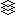
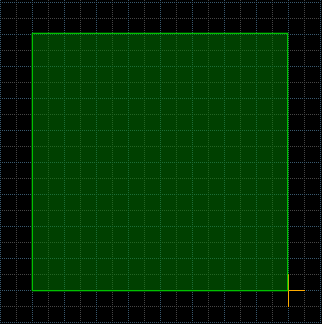
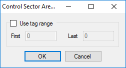
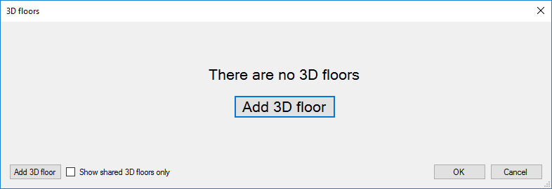
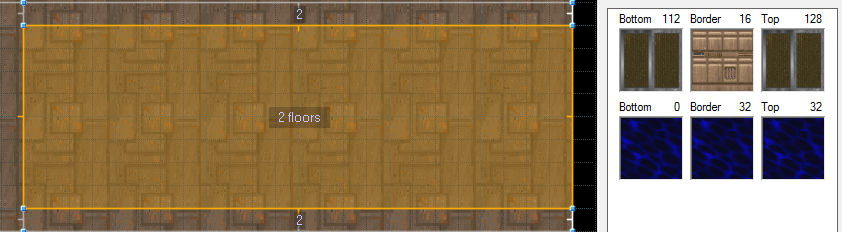
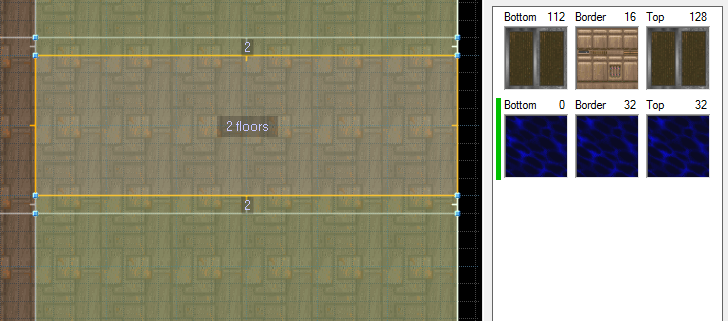

This mode lets you manage the 3D floors. Available in Hexen format and UDMF
Menu path: Mode -> 3D Floor Mode
Action category: 3D Floor Plugin.
Default key: None.
| Action | Default key | UI button | Description |
|---|---|---|---|
| 3D floor editing mode | none |  | Enters the 3D floor editing mode |
| Cycle highlighted 3D floor down | Shift+ScrollDown | none | Cycles down through the 3D floors present in the highlighted sector |
| Cycle highlighted 3D floor up | Shift+ScrollUp | none | Cycles up through the 3D floors present in the highlighted sector |
| Select 3D floor control sector | Shift+S | none | Selects the control sector of the highlighted 3D floor |
| Relocate 3D floor control sectors | none | Text button | Relocates the 3D floor control sectors to the current position of the control sector area |
| none |
The Control Sector Area
Upon entering the 3D floor mode you will see a green square:
This is the control sector area (CSA). All 3D floor control sectors will be created in this area. If there is not enough space in the CSA you will not be able to create more 3D floors.
Modifying The Control Sector Area
You can resize and move the CSA. Resizing is done by simply dragging the edges or corners by holding the right mouse button. Moving is done by pointing the cursor inside the CSA and then drag it around by holding the right mouse button.Tag Ranges
You can define a range of tags that should be used for the 3D floor control sectors. This is done by pointing the cursor inside the CSA and then pressing the right mouse button. This will open the following dialog:
To set a range of tags to use first check the Use tag range checkbox and then set the desired first and last tag. Note: if you run out of tags you will not be able to create more 3D floors.
Managing 3D Floors
3D floor mode works similar to sectors mode. You can select and deselect sectors, but when you edit them (default: right mouse button) the 3D floor editing dialog will show up:
To add a new 3D floor press either one of the *Add 3D floor* buttons. After doing so a widget will be shown in the window that lets you set the properties of the 3D floor. The green bar on the left side indicates that this 3D floor was newly added.
Note: you can have many 3D floors in the same sectors. Just keep pressing the Add 3D floor button.

On the left side you can set bottom (control sector floor) height and texture, the border texture and the top (control sector ceiling) height and texture of the 3D floor. The border height, or thickness, is calculated automatically.
In the center let's you set commonly used properties, like the type and flags of the 3D floor, as well as it's alpha and the brightness below the 3D floor. It also shows the tags of the control sector, as well as a button to edit the all properties of the control sector.
On the right a list of sectors is displayed. This list indicates which sectors this 3D floor is applied to. Currently selected sectors are shown at the top, currently not selected sectors at the bottom, grayed out. You can check or uncheck the selected sectors to apply or remove a 3D floor from this sector.
On the very right are several buttons to speed up common workflows:
| Button | Action |
|---|---|
| Duplicate | creates an exact copy of the 3D floor and adds it to all checked sectors |
| Split | creates a new 3D floor for each checked sector, so that each sector has its unique 3D floor |
| Detach | creates a copy of the 3D floor, remocing the checked sectors from the source 3D floor, adding them to the newly created one |
| Check all | checks all sectors, applying the 3D floor to them |
| Uncheck all | unchecks all sectors, removing the 3D floor from them |
Using The Docker
The plugin comes with a docker for the 3D floor editing mode. Make sure the dockers are always expanded by pressing the icon at the top of the docker if necessary. The docker will be selected by default when entering the 3D floor editing mode.
icon at the top of the docker if necessary. The docker will be selected by default when entering the 3D floor editing mode.When highlighting a sector the docker will show basic information about the 3D floors in this sector:

You can use the cycle highlighted 3D floor up (default: Shift+ScrollUp) and cycle highlighted 3D floor down (default: Shift+ScrollDown) actions to cycle through the 3D floors in the docker. A green bar on the left side will indicate which 3D floor is highlighted. All sectors the highlighted 3D floor is applied to will be shown with a green tint.

You can use the Select 3D floor control sector action (default: Shift+S) to select the control sector of the highlighted 3D floor. This is useful if you want to apply a slope to this 3D floor.